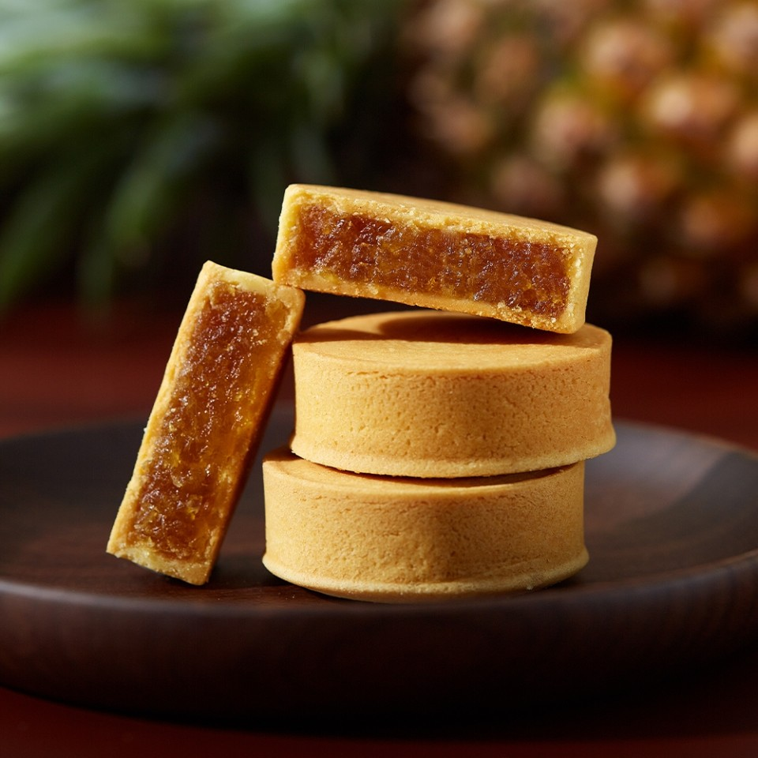
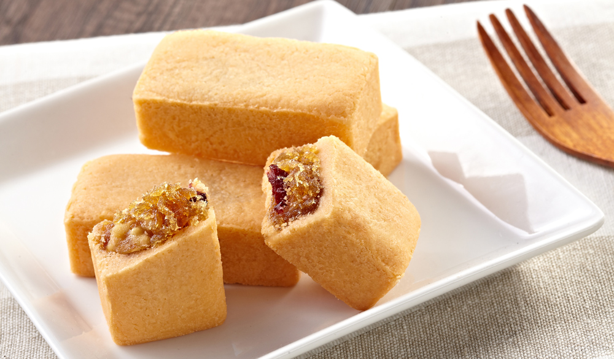
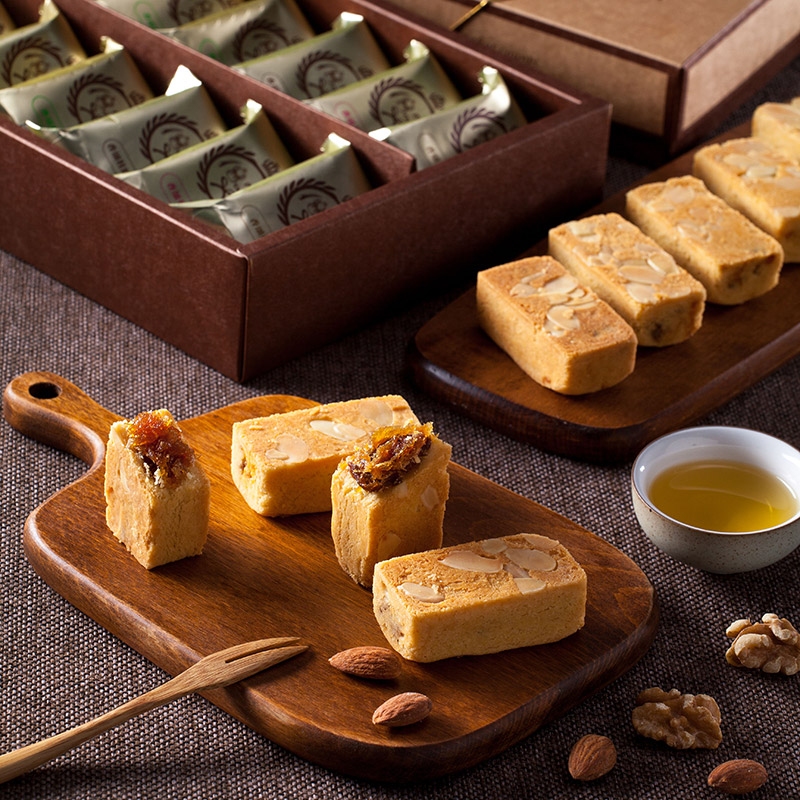

1.由來 台灣在1970年代還處於農業時代，當時經濟發展皆以農產品及加工外銷為支柱，特別是鳳梨， 在當時外銷市場排名全世界第二。當時，鳳梨生產十分充足，許多鳳梨皆被加工鳳梨罐頭外銷國外， 一度成為鳳梨罐頭外銷大國！ 除此之外，國內許多各產業也嘗試運用盛產的鳳梨，製成果醬、或蜜餞食品，烘焙業者更試圖運用鳳梨，做成中式糕點。 一開始業者們將鳳梨作成果醬，外面包上餅皮，做成鳳梨餅。 但由於鳳梨本身纖維較粗，酸度太高，口感吃起來比較粗糙，太酸，纖維又容易塞牙縫，雖然有用豬油做成的餅皮來潤飾，整體口感依舊不甚理想。 師傅們嚐試將鳳梨醬融合了其他食材等，始終找不出一個令大家滿意的口感．多次實驗下， 終於找出了最佳搭配物～「冬瓜」， 含水量高達90%的冬瓜，組織纖維細密，煮熟脫水後，加入鳳梨，糖，麥芽等經長時間慢火熬煉。 2.土鳳梨酥 傳統鳳梨酥的內餡通常會拌入冬瓜餡，主要是為了調和鳳梨酸度，降低纖維感,讓口感滑順,  但近年來卻有人質疑這是假鳳梨酥，原因在於冬瓜餡比例過高， 甚至僅僅用冬瓜餡加特殊食用香精調味，完全未使用鳳梨果肉，且標示不實， 因此造成標榜純鳳梨餡的土鳳梨酥開始流行，一般說來，鳳梨酥冬瓜餡加越多，內餡顏色會越淡，缺乏纖維感， 所謂的土鳳梨酥，是指用純鳳梨製餡的鳳梨酥， 內餡能明顯吃到鳳梨纖維，且酸度、香氣較重，一顆土鳳梨，最多只能做10個鳳梨酥，因此製作成本相對比冬瓜餡來的高出許多。 3.追溯三國的由來 相傳在三國時代(公元220-280年)，即劉備以喜餅迎娶孫權之妹，而訂婚禮餅中便有以鳳梨（即菠蘿）入餡制成的大餅。 臺灣婚禮習俗中，訂婚禮餅共六種口味代表六禮，其中一種鳳梨閩南話發音又稱“旺來”， 象征子孫旺旺來的意思，而鳳梨亦是臺灣人拜拜常用的貢品，取其“旺旺”“旺來”之意，深受民眾喜愛。 4.改良 早期的鳳梨禮餅因太大塊，一般人消費不起，近百年前，臺中縣一位糕餅師傅顏瓶， 經常挑著擔子、帶著自己做的“龍鳳餅”到臺中販售。最初的“龍餅”是包了肉餡的大圓餅， 同樣大小的“鳳餅”，則以菠蘿為內餡。 “龍鳳餅”因為吉祥的寓意，被認為是訂婚、結婚不能或缺的喜餅。后來經過顏瓶改良，鳳餅縮小成每個大約25至100克的精巧小餅，鳳梨酥從此誕生。 5.材料 食材：鳳梨冬瓜醬、生鴨蛋黃、土鳳梨餡、米酒、低筋麵粉、糖粉、起司粉、奶粉、煉乳、鹽、蛋黃、無水奶油=酥油、無鹽奶油 6.溫度 十分鐘150℃高溫、40分鐘130℃低溫，烘烤成黃金色外型。 7.特產地:台中  
來源(1) 來源(2)(請用chrome打開)